25 tons · Inner Sphere · 24 variants · 2463 to 3146

The Battle of Nox, 2475.
The first full-scale battle ever fought between BattleMechs, and among the Lyran machines on the field were COM-1A Commandos facing Draconis Combine Gladiators that weighed 55 tons to the Commando's 25.
The Lyrans won.
Not because the Commando somehow turned into a pocket assault 'Mech. Archon Michael Steiner's force had supporting armour, superior experience and the numbers to exploit it. But the little Commandos were there, twelve years into their service life, fighting machines more than twice their weight and helping hand the Combine a defeat severe enough that the Gladiator never really recovered from it.
Andre Barcalow designed the original COM-1A for Coventry Defense Conglomerate, later Coventry Metal Works, and the Lyran Commonwealth Armed Forces took delivery in 2463. It was conceived as a reconnaissance 'Mech from the beginning rather than adapted into the role later, which at that point in BattleMech history was still unusual enough to matter.
The large laser did not work out.
That is essentially the story of the first few decades. The COM-1A carried a single large laser and nothing else, and the installation caused enough trouble that Coventry kept revisiting the design. The COM-1D of 2480 is the machine caught halfway through that argument: the large laser remained, but an SRM-6 was added alongside it.
Then came the COM-2D in 2486. The big laser disappeared. In its place came a medium laser, an SRM-6 and an SRM-4. That settled it.
The basic recipe worked so well that the COM-2D became the Commando people mean when they simply say Commando. Nearly six centuries later, it is still turning up on force lists. The Master Unit List continues to carry the 2D deep into later eras, which is extraordinary longevity for a 25-ton machine designed before the Star League existed.
Then, in 3015, somebody went back to the large laser.
The COM-1B brought it back alongside a medium laser and an SRM-2, removing the SRM-6 from the later missile-heavy arrangement. I find that genuinely funny. Not because it was necessarily a stupid idea. Military procurement does this constantly. A concept gets rejected, circumstances change, somebody digs through the filing cabinet thirty years later and says: "What about this?"
The Commando's appearance has its own smaller saga. The original Technical Readout: 3025 artwork showed the 'Mech's head turned to one side. Enough people interpreted the drawing as a straight-on view that the Commando acquired the unofficial appearance of a machine with one eye and a tilted hat. And then it stuck. Official artwork repeated the look until Technical Readout: 3050 finally redrew the head facing forward.
There is also Death's Knell, the silver Commando piloted by Captain Bono Duganmare of the Twenty-second Skye Rangers and documented in TRO:3025. Duganmare is canonical. The machine is canonical. Its exact configuration is not. Later games gave Death's Knell a specific hero loadout, but the original source never established one, so it does not get a verdict row below. It still deserves the mention.
Two Commando configurations eventually earned actual names rather than simply another letter and number. The COM-7Y2 Blazing Inferno traces back to technicians on Chara III modifying the old COM-2D during the events associated with The Crescent Hawks' Inception. Both missile racks disappeared. In their place went four medium lasers and six small lasers, producing a tiny machine with the tactical philosophy of getting far too close and making the other pilot regret allowing it. The configuration was later canonised in Shrapnel.
Then came the Civil War-era COM-7T Blazing Inferno II. Four ER medium lasers. Five ER small lasers. One additional standard small laser. And triple-strength myomer. The laser battery generates the heat. The TSM makes use of it, turning a deliberately hot Commando into something faster and much uglier in a physical fight once the temperature climbs.
Six centuries after Andre Barcalow drew up a 25-ton scout with one troublesome large laser, people were still finding new ways to make the same chassis dangerous.
That may be the most Commando thing about it.
What it is. Twenty-five tons, walking six and running nine on a standard 150-rated fusion engine in the baseline configuration, with the COM-2D's medium laser and twin SRM racks still the most common thing you will meet. 24 configurations on record, the earliest from 2463, the newest from 3146.
Twenty-five tons is not much to build a 'Mech out of, and the Commando spends almost all of it on one job: being somewhere, seeing something, and getting back out. Walk six, run nine on the standard 150 fusion engine, which was already respectable in 2486 and is still perfectly usable six centuries later.
The baseline COM-2D carries a medium laser and two SRM racks, 2/2/0 on the Alpha Strike card, against the COM-7S2's 3/3/0 at the top of the lineup. That gap is smaller than you would expect across 683 years of refits, because this chassis was never trying to out-damage anything. It was trying to not be where the damage lands.
What never changed. 21 of the 24 variants are tagged Striker and keep some form of short-range missile rack right through to the 3140s. Only 3 are tagged pure Scout, and only the COM-9S carries any long-range damage at all. This has never been a 'Mech that wants to trade at range.
Production never really stopped, it just kept changing hands. Lyran Commonwealth service carried the COM-2D pattern through the Star League era, Kell Hounds and Wolf's Dragoons ran them as mercenaries through the long dry stretch of the Succession Wars, and Periphery General forces are still fielding the pattern into the ilClan era, long after the Great Houses themselves had moved on to newer things.
Production spread the same way the Locust's did, more by inertia than ambition. Arcturan Arms, Hope Industrial Works, Marian Arms, Maxell Metals, Peloran Motors, Protectorate Military Industries, Rim Motors, Vandenberg Mechanized Industries and several others all built their own runs of the COM-2D pattern over the centuries, and a Commando built in one factory is, for practical purposes, the same Commando built in any other.
Every verdict below is against other Commando configurations, almost always within the same era. Armour and structure genuinely differ by refit on this chassis, there are no pod-swappable OmniMech variants here, so the Trap tier below is doing real work rather than stating the obvious.
Nothing in its era does the chassis's job better for the money.
Does the job competently. Another variant does it better or cheaper, but there is no reason to avoid this one.
Only earns its Battle Value if you specifically need what it carries. C3, stealth, a command console, flak, jump jets.
Another variant in the same era, at no more than 3 percent above its Battle Value, matches or beats it on every Alpha Strike damage band, on armour, on structure, and carries every special ability it has. Nothing gained, something lost, no dearer.
Only the Trap tier is calculated. It is worked out from the variant data rather than decided by me, which means it is falsifiable: to argue with it you only have to name something the cheaper machine gives up. The other three are my opinion and you should treat them that way. 4 of the 24 Commando variants fail the Trap test. The full rating scale is here, including what it deliberately does not measure.
All 24 are in the table further down. These are the ones that change how you think about the chassis.
25 tons · BV 541 · PV 17 · Striker · 2486
Walk 6 / Run 9 / Jump 0 · 10 Single · 150 Fusion Engine
1x Medium Laser, 1x SRM 4, 1x SRM 6
The recipe that stuck: one medium laser and two SRM racks sharing 190 rounds, in place of the large laser nobody could make work. It is on the Master Unit List in every single era bracket from the Star League to the ilClan era, eleven for eleven, which no other Commando configuration manages. This is the Commando, full stop, and the one every later refit gets compared to.
25 tons · BV 728 · PV 21 · Striker · 3025
Walk 6 / Run 9 / Jump 0 · 10 Single · 150 Fusion Engine
6x Small Laser, 4x Medium Laser
The one with a name. Chara III techs stripped both SRM packs off a 2D and replaced them with six small lasers and four mediums, according to the Crescent Hawks' Inception. Ten laser-fed heat sinks and a weapons fit that trades reach for a genuinely nasty alpha strike at knife range.
25 tons · BV 1018 · PV 26 · Striker · 3062
Walk 6 / Run 9 / Jump 0 · 11 IS Double · 150 Fusion Engine
5x ER Small Laser, 4x ER Medium Laser, 1x Small Laser
The Civil War-era follow-up to the original Blazing Inferno: five ER small lasers, four ER mediums, one more small laser for good measure, and triple-strength myomer to push the alpha even further when things get hot. The most expensive non-mixed-tech Commando in the record, and it is trying to do something none of the others attempt.
25 tons · BV 719 · PV 23 · Striker · 3146
Walk 7 / Run 11 / Jump 0 · 10 IS Double · 175 XL Engine
1x Light PPC, 2x SRM 2 (I-OS), 2x MML 3
The only Commando in the entire 24-variant record with any long-range Alpha Strike damage at all, courtesy of a Light PPC. Two improved one-shot SRM 2s and a pair of MML 3s round it out, with CASE II. Everything else on this chart is a knife fighter; this is the one exception.
25 tons · BV 543 · PV 20 · Scout · 3051
Walk 6 / Run 9 / Jump 0 · 10 Single · 150 Fusion Engine
2x Small Laser, 1x SRM 6
The dedicated scout of the lineup: two small lasers, an SRM 6, a probe and reconnaissance gear, and nothing pretending to be a frontline brawler. Role tag says Scout and means it.
Piloting one. You are not there to win a firefight. 3 variants are built explicitly as Scouts and the other 21 are Strikers in name only, most of them are still too lightly armoured to stand and trade. Use the speed, use the SRMs at close range where they actually hit, and treat every engagement as optional until you decide otherwise.
Opposing one. At 458 to 1105 Battle Value, the cheap end of this chassis is genuinely cheap, cheaper than a single Locust 1V plus change. Do not assume it is harmless just because the number is small. The COM-7J, COM-7B and COM-7S2 (Freyr) can all jump, and a Commando that jumps into your rear arc with a Streak-fed SRM rack is a worse afternoon than the Battle Value suggests.
If you run solo games with our AI opponent, the role tags on this chassis split cleanly and the engine treats them very differently.
Worth knowing because an OpFor lance built entirely from Scout-tagged Commandos plays nothing like one built from the Striker-tagged majority, and both are cheap enough to field in numbers.
Damage figures are the Alpha Strike short, medium and long values. BV is Battle Value 2.0.
| Variant | Intro | BV | PV | Role | Weapons | S/M/L | Verdict |
|---|---|---|---|---|---|---|---|
| Age of War | |||||||
| COM-1A | 2463 | 475 | 13 | Scout | 1x Large Laser | 1/1/0 | Situational |
| COM-1D | 2480 | 558 | 17 | Striker | 1x Large Laser, 1x SRM 6 | 2/2/0 | Trapbeaten by COM-2D |
| COM-2D | 2486 | 541 | 17 | Striker | 1x Medium Laser, 1x SRM 4, 1x SRM 6 | 2/2/0 | Worth it |
| Late Succession War - LosTech | |||||||
| COM-1B | 3015 | 616 | 17 | Striker | 1x Medium Laser, 1x Large Laser, 1x SRM 2 | 2/2/0 | Trapbeaten by COM-7X |
| COM-7X | 3018 | 623 | 21 | Striker | 3x Medium Laser, 1x SRM 6 | 3/3/0 | Worth it |
| Late Succession War - Renaissance | |||||||
| COM-1C | 3020 | 458 | 14 | Striker | 1x Medium Laser, 1x AC/2 | 1/1/0 | Situational |
| COM-7Y | 3022 | 684 | 24 | Striker | 3x Medium Laser, 1x SRM 6 | 3/3/0 | Solid |
| COM-3A | 3025 | 540 | 17 | Striker | 1x Medium Laser, 2x SRM 6, 1x Flamer | 2/2/0 | Solid |
| COM-7Y2 'Blazing Inferno' | 3025 | 728 | 21 | Striker | 6x Small Laser, 4x Medium Laser | 3/2/0 | Worth it |
| Clan Invasion | |||||||
| COM-5S | 3050 | 557 | 17 | Striker | 1x Medium Laser, 1x Streak SRM 2, 1x SRM 6 | 2/2/0 | Solid |
| COM-7Z | 3051 | 661 | 20 | Striker | 2x Medium Laser, 1x SRM 6 | 2/2/0 | Trapbeaten by COM-7A |
| COM-7Z2 | 3051 | 543 | 20 | Scout | 2x Small Laser, 1x SRM 6 | 2/1/0 | Situational |
| COM-7A | 3056 | 625 | 20 | Striker | 1x Medium Laser, 2x SRM 4 | 2/2/0 | Worth it |
| COM-7J | 3056 | 599 | 18 | Striker | 1x Medium Laser, 2x SRM 4 | 2/2/0 | Solid |
| COM-7W | 3056 | 608 | 17 | Striker | 2x Medium Laser, 1x Streak SRM 2, 1x SRM 4 | 2/2/0 | Trapbeaten by COM-5S |
| Civil War | |||||||
| COM-7T 'Blazing Inferno II' | 3062 | 1018 | 26 | Striker | 5x ER Small Laser, 4x ER Medium Laser, 1x Small Laser | 3/3/0 | Worth it |
| COM-7S | 3064 | 658 | 20 | Striker | 2x ER Medium Laser, 2x Streak SRM 2, 1x SRM 4 | 3/3/0 | Solid |
| COM-4H | 3064 | 691 | 17 | Striker | 2x Medium Laser, 6x Rocket Launcher 15 | 2/2/0 | Situational |
| Jihad | |||||||
| COM-7B | 3068 | 602 | 18 | Striker | 1x ER Medium Laser, 2x Flamer, 2x SRM 4 | 3/2/0 | Solid |
| COM-7S2 (Freyr) | 3070 | 1105 | 26 | Striker | 2x ER Medium Laser, 2x Streak SRM 4 | 3/3/0 | Worth it |
| COM-1AK | 3072 | 533 | 16 | Scout | 2x Medium Laser, 1x Small Laser | 2/1/0 | Situational |
| COM-2Dr | 3075 | 563 | 18 | Striker | 1x ER Medium Laser, 1x MML 7 | 2/2/0 | Solid |
| Late Republic | |||||||
| COM-8S | 3108 | 775 | 25 | Striker | 2x ER Medium Laser, 2x Streak SRM 2 | 2/2/0 | Worth it |
| Dark Age | |||||||
| COM-9S | 3146 | 719 | 23 | Striker | 1x Light PPC, 2x SRM 2 (I-OS), 2x MML 3 | 2/2/1 | Worth it |
Availability for the COM-2D by era, straight off the Master Unit List. It appears in all 11 of them, which almost nothing on this site manages.
| Era | Available to |
|---|---|
| Star League (2571 - 2780) | Lyran Commonwealth |
| Early Succession War (2781 - 2900) | Circinus Federation, Clan Goliath Scorpion, Clan Smoke Jaguar, Lyran Commonwealth, Mercenary, Star League in Exile |
| Late Succession War - LosTech (2901 - 3019) | Kell Hounds, Lyran Commonwealth, Mercenary, Periphery General, Wolf's Dragoons |
| Late Succession War - Renaissance (3020 - 3049) | Free Rasalhague Republic, Kell Hounds, Lyran Commonwealth, Mercenary, Periphery General, Wolf's Dragoons |
| Clan Invasion (3050 - 3061) | Federated Commonwealth, Free Rasalhague Republic, Kell Hounds, Lyran Alliance, Lyran Commonwealth, Mercenary, Periphery General, Taurian Concordat, Wolf's Dragoons |
| Civil War (3062 - 3067) | Free Rasalhague Republic, Kell Hounds, Lyran Alliance, Mercenary, Periphery General, Wolf's Dragoons |
| Jihad (3068 - 3080) | Escorpión Imperio, Free Rasalhague Republic, Kell Hounds, Lyran Alliance, Mercenary, Periphery General, Wolf's Dragoons |
| Early Republic (3081 - 3100) | Escorpión Imperio, Lyran Commonwealth, Mercenary, Periphery General |
| Late Republic (3101 - 3130) | Lyran Commonwealth, Periphery General |
| Dark Age (3131 - 3150) | Lyran Commonwealth, Periphery General |
| ilClan (3151 - 9999) | Periphery General |
20 tons · Inner Sphere · 24 variants · BV 424 to 956
The other light everyone owns, and the opposite answer to the same twenty-odd tons: a laser and an apology instead of missiles worth respecting.
20 tons · Inner Sphere · 20 variants · BV 314 to 755
A contemporary of the early Commando, built around jump jets rather than missile racks for its mobility.
20 tons · Mixed · 17 variants · BV 341 to 754
The Wasp's stablemate and frequent partner, same era, same reconnaissance brief, different hardpoints.
For most games the COM-2D is still the reference point, it carries the medium-laser-and-twin-SRM recipe that has stayed in service longer than anything else on this chart. If you want more, the COM-7A gets the same era's loadout cheaper, the COM-8S is the modern networked standard, and the COM-9S is the only one that reaches out to long range at all.
TRO:3025 printed the original artwork with the head turned to one side, and enough readers mistook it for a straight-on view that the "one eye and a tilted hat" look became the chassis's unofficial identity for a quarter century. TRO:3050 finally redrew the head facing forward.
Andre Barcalow designed the original for Coventry Defense Conglomerate, later Coventry Metal Works, in 2463 for the Lyran Commonwealth Armed Forces. Later production spread across Arcturan Arms, Hope Industrial Works, Marian Arms, Maxell Metals, Peloran Motors, Protectorate Military Industries, Rim Motors, Vandenberg Mechanized Industries and several others.
A silver Commando piloted by Captain Bono Duganmare of the 22nd Skye Rangers, documented in TRO:3025. The captain and the machine are both canonical, but the source never specifies which configuration he actually flew, so it is a piece of history rather than one of the 24 ranked variants.
Yes, as a scout and a close-range spoiler, never as a frontline fighter. The cheapest configurations cost less than a Locust and the most expensive, the mixed-tech COM-7S2, costs 1105 against an Atlas at 1897. The question is never whether a Commando beats an Atlas in a straight fight. It is how many of them, and how much information, you get for the Atlas you did not buy.
Stats on this page are generated directly from our variant database, which is reconciled against the Master Unit List for Battle Value, introduction dates and per-era faction availability. Alpha Strike damage values are the standard card figures. If you spot something wrong, tell me and I will fix it.